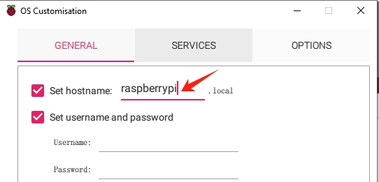
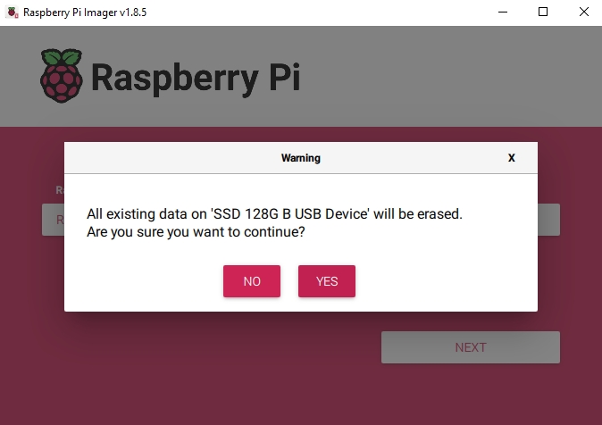

Note
您好，欢迎加入 SunFounder 的 Raspberry Pi、Arduino 和 ESP32 爱好者 Facebook 社区！与志同道合的朋友一起深入探索 Raspberry Pi、Arduino 和 ESP32 的无限可能。
为什么加入？
专家支持：在社区和官方团队的帮助下解决售后问题和技术难题。
学习与分享：交流技巧和教程，提升技能。
独家预览：抢先了解新产品发布和独家预览内容。
专属折扣：享受我们最新产品的专属优惠。
节日促销与抽奖：参与节日特别活动和抽奖。
👉 准备好一起探索与创造了吗？点击 [here] 立即加入！
将操作系统从 Micro SD 卡复制到 NVMe SSD
如果您已经拥有 NVMe SSD，但没有适配器将其连接到电脑，可以选择第三种方法：先将系统安装在 Micro SD 卡中。等 Raspberry Pi 5 成功启动后，再将系统从 Micro SD 卡迁移到 NVMe SSD。
首先，您需要 在 Micro SD 卡上安装操作系统。
然后，启动并登录您的 Raspberry Pi。如果您不确定如何登录，可以访问官方 Raspberry Pi 网站：Getting Started with Raspberry Pi。
完成上述步骤后，再继续以下操作。
1. 启用 PCIe
默认情况下，PCIe 接口是未启用的。
要启用它，您需要打开
/boot/firmware/config.txt文件。sudo nano /boot/firmware/config.txt
然后在文件中添加以下内容：
# 启用外部 PCIe 接口 dtparam=pciex1
pciex1有一个更容易记忆的别名，您也可以添加dtparam=nvme到/boot/firmware/config.txt文件中。dtparam=nvme
该连接默认支持 Gen 2.0 速度（5 GT/秒），但您可以通过添加以下行强制使用 Gen 3.0（10 GT/秒）：
# 强制使用 Gen 3.0 速度 dtparam=pciex1_gen=3
Warning
Raspberry Pi 5 并未对 Gen 3.0 速度进行认证，使用该速度连接 PCIe 设备可能会导致不稳定。
您还需要禁用 PCIe 启动延迟，以便 Raspberry Pi 在启动时可以检测到 PCIe Switch 后面的 NVMe 驱动器。请在
/boot/firmware/config.txt文件中添加以下内容：dtparam=pciex1_no_10s=on
按下
Ctrl + X，Y，然后Enter保存更改。
BOOT_ORDER
如果您安装了两个 NVMe 系统盘，并需要选择其中一个作为启动盘，
可以修改 /boot/firmware/cmdline.txt 文件中的 ROOT=PARTUUID=xxxxxxxxx 为您希望启动的磁盘的 UUID。您可以使用以下命令查找磁盘的 UUID：
ls /dev/disk/by-id/
2. 在 SSD 上安装操作系统
有两种方式可以在 SSD 上安装操作系统：
将系统从 Micro SD 卡复制到 SSD
连接显示器或通过 VNC Viewer 访问 Raspberry Pi 桌面。然后点击 Raspberry Pi 图标 -> 附件 (Accessories) -> SD 卡复制器 (SD Card Copier)。
确保正确选择 从哪复制（Copy From） 和 复制到（Copy To） 的设备。务必不要搞混。
勾选 “NEW Partition UUIDs”，确保系统能正确区分设备，避免挂载冲突和启动问题。
选择好后，点击 Start。
系统会提示 SSD 上的内容将被清除，请确保提前备份数据后再点击 Yes。
等待一段时间，复制完成即可。
使用 Raspberry Pi Imager 安装系统
如果您的 Micro SD 卡中已安装桌面版系统，可以使用镜像工具（如 Raspberry Pi Imager）将系统烧录到 SSD。本例以 Raspberry Pi OS bookworm 为例，其他系统可能需要先安装镜像工具。
连接显示器或通过 VNC Viewer 访问 Raspberry Pi 桌面。然后点击 Raspberry Pi 图标 -> 附件 (Accessories) -> Imager。
在 Raspberry Pi Imager 中，点击 Raspberry Pi Device，从下拉列表中选择 Raspberry Pi 5 机型。
选择 操作系统（Operating System），推荐选择官方推荐的版本。
在 存储（Storage） 选项中，选择您插入的 NVMe SSD。

点击 NEXT 然后选择 EDIT SETTINGS 以自定义操作系统设置。
Note
如果您为 Raspberry Pi 连接了显示器，可以跳过接下来的设置，直接点击“是（Yes）”开始安装，其他设置稍后可在显示器上完成。

设置一个 主机名（hostname） 给您的 Raspberry Pi。
Note
主机名是 Raspberry Pi 在网络中的标识，您可以通过
<hostname>.local或<hostname>.lan访问它。创建一个 用户名和密码，用于 Raspberry Pi 的管理员账户。
Note
设置唯一的用户名和密码对于保护您的 Raspberry Pi 至关重要，因为它没有默认密码。

配置无线网络，填写您的 SSID（无线网络名） 和 密码。
Note
请将
Wireless LAN country设置为您所在国家的两位 ISO/IEC alpha2 国家代码。
若需远程连接 Raspberry Pi，可在 服务（Services） 标签中启用 SSH。
使用 密码验证 时，将使用“常规（General）”标签中的用户名和密码。
若使用 公钥验证，请选择 “仅允许公钥验证（Allow public-key authentication only）”。如果您已有 RSA 密钥将直接使用；若没有，可点击 “Run SSH-keygen” 生成一对新的密钥。

选项（Options） 菜单可配置 Imager 写入完成后的行为，如完成后播放提示音、弹出设备、启用遥测等。

设置完成后，点击 保存（Save） 保存自定义设置。然后点击 是（Yes） 应用这些设置并开始写入镜像。

如果 NVMe SSD 中已有数据，请先备份以防数据丢失。如果不需要备份，可直接点击 是（Yes） 继续。
当您看到 “写入成功（Write Successful）” 弹窗时，说明镜像已写入并验证成功。您现在可以使用 NVMe SSD 启动 Raspberry Pi 啦！

{kind=link}
{kind=link}
{kind=link}
3. 配置从 SSD 启动
本节将指导您如何配置 Raspberry Pi 直接从 NVMe SSD 启动，从而比使用 SD 卡获得更快的启动速度和更好的性能。请按照以下步骤操作：
首先，在 Raspberry Pi 上打开终端，运行以下命令以进入配置界面：
sudo raspi-config在
raspi-config菜单中，使用方向键导航并选择 高级选项（Advanced Options）。按下Enter进入高级设置。在 Advanced Options 中，选择 Boot Order （启动顺序）。该设置允许您指定 Raspberry Pi 搜索可启动设备的顺序。
然后，选择 NVMe/USB boot。这会告诉 Raspberry Pi 优先从 USB 连接的 SSD 或 NVMe 驱动器启动，而不是从 SD 卡等其他设备启动。
选择好启动顺序后，按下 Finish 退出 raspi-config。您也可以使用 Esc 键 关闭配置工具。
要应用新的启动设置，请运行以下命令重启 Raspberry Pi：
sudo reboot
重启后，Raspberry Pi 应该会尝试从您连接的 NVMe SSD 启动，为系统提供更高的性能和更强的耐用性。